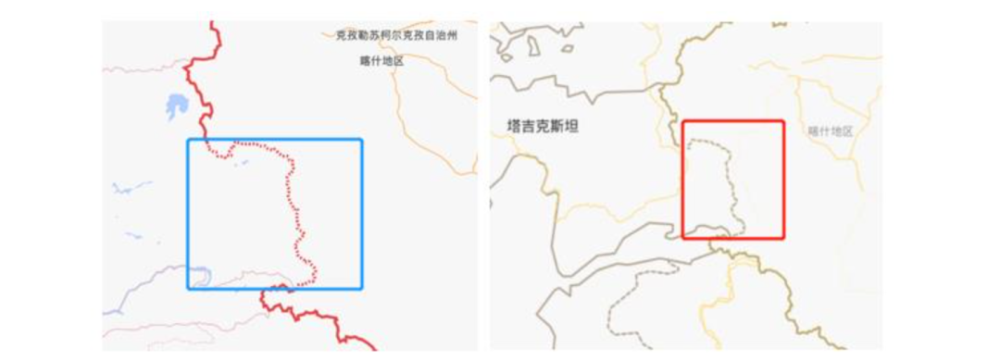
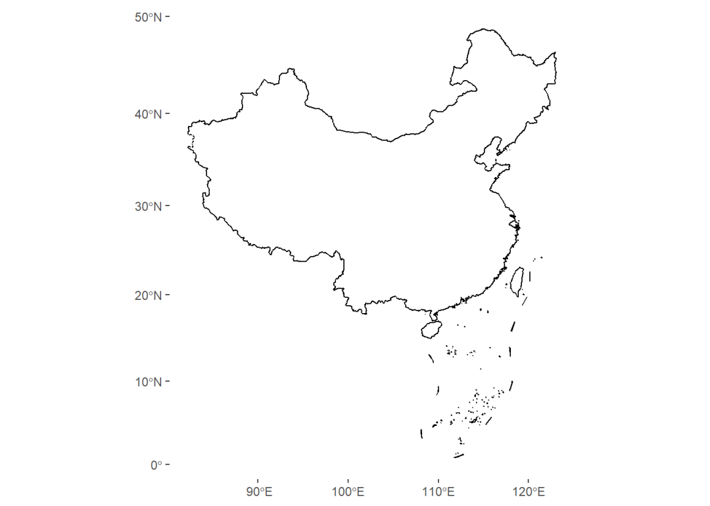
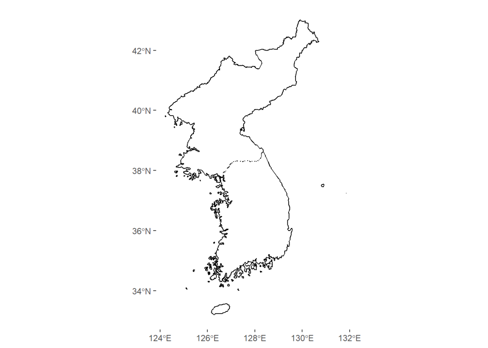
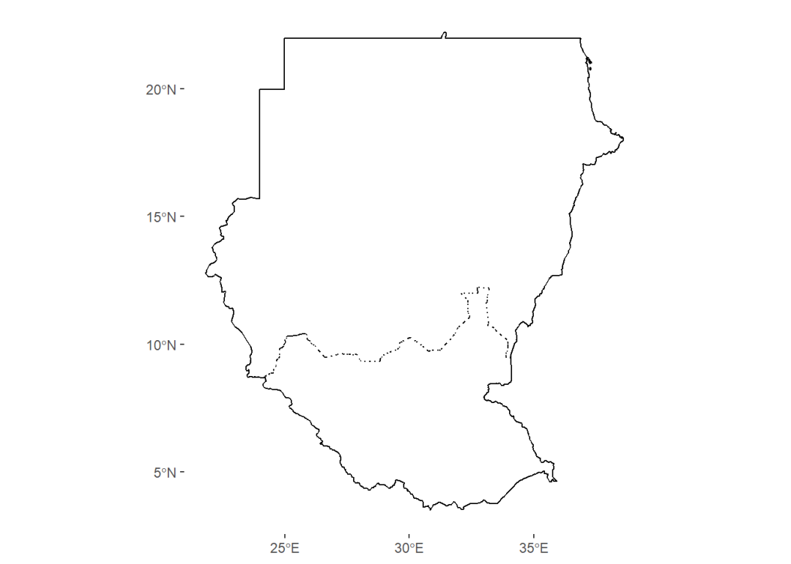
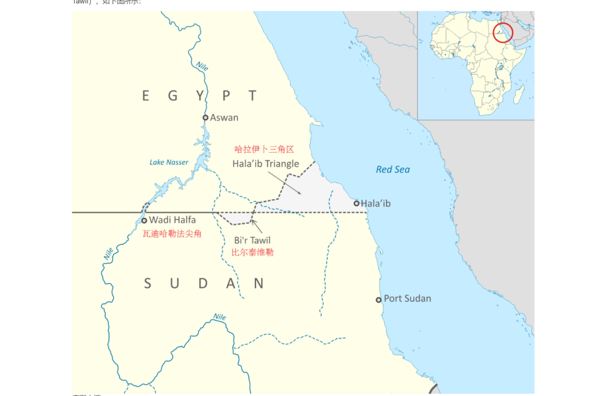
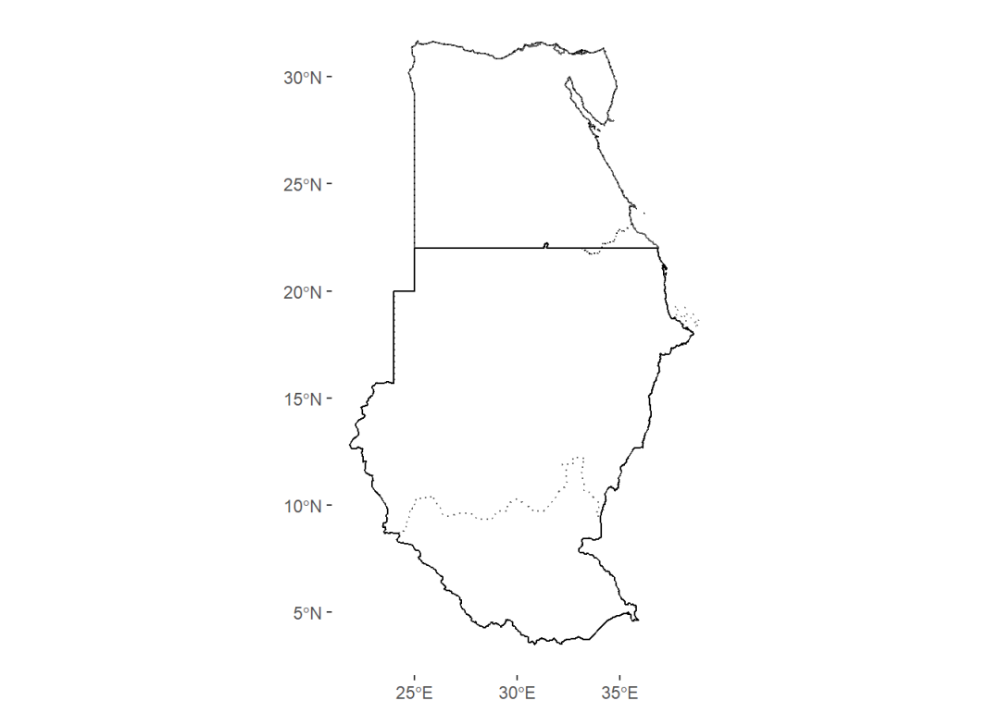

收录于合集
#地图绘制 6 个
#数据可视化 15 个
我们在之前推送的《实用技术 | 如何用R绘制并填充相对正确的中国地图》和《实用技术 | 如何用R绘制并填充相对正确的世界地图》两篇文章中曾经提及在用R生成地图后在送审前需要注意未定国界的绘制问题，我们当时给出的处理建议是在生成高dpi的原图后用Adobe Illustrator或者Photoshop等专业制图软件统一将其修改为未定国界式样。但作为一个重度强迫症患者，在做完几期推送后，笔者也一直在琢磨如何在R里绘制未定国界。笔者曾经以为一劳永逸的方法是申请国家地理信息公共服务平台的官方地图——天地图tk，然后在QGIS和ArcGIS里通过WMTS调用天地图的中国地图和世界地图的瓦片，下载后将其导出为shape文件再用R读取，但是后续操作极其复杂，且效率和成功率都很低（经常出现无法下载的情况）。作为非GIS专业的学生，这一问题曾经困扰了笔者很长一段时间，直到最近笔者在散步的时候脑海里突然灵光一现，于是在回到宿舍后打开电脑查了资料，在此基础上一试，发现刚才在脑海里灵光一现的处理方法确实可以有效解决之前的困惑，当即决定写一篇帖子来与大家分享。在正式行文开始前需要说明两点：首先，这样做并不是多此一举，更不是钻牛角尖，其现实目的是 更好地绘制出接近自然资源部发布的标准地图的地图，以提高含有国界线（行政边界）地图的论文/著作在发表/出版前将地图送审的通过率。其次，本文介绍的方法肯定不是最简单的，欢迎广大读者朋友批评指正。
由于目前市面上出版的中国地图仍以1989年的国界线为准，因此即便之后中国与周边国家陆续签订了边界协定，完成了边界划定工作，但是有些边界划定并未在现行出版的地图上进行反映或更新，所以我们迄今会看到国内出版的中国地图（无论是纸质地图还是电子地图）在与塔吉克斯坦交界处有一段未定国界（如图1所示）：
 图1
从本质上来说，在R中实现未定国界的绘制就是解决多边形中共享边（或共享边中的一部分）的设置问题，如果我们有现成的共享边（或共享边中的一部分）的文件，则可以在此基础上快速绘出未定国界（将其设置成虚线或其他非实线的形式即可），这当然是最理想的情况。但如果我们一时间无法拿到这些文件，则需要综合利用多种手段，最后再用Adobe Illustrator或Photoshop之类的软件加以完善。在今天推送的实用技术贴中，我们将给出两种基本解决方案，分别适合绘制标准中国地图中的未定国界和其他国家的未定国界。
首先，对于绘制标准中国地图的未定国界而言，完整通过代码处理起来手续比较复杂。因为现行出版地图中中塔两国的未定国界只占中塔全部边界的一部分，如果全部要用代码实现，那么我们必须从头到尾弄清楚未定国界的起止范围。机缘巧合的是，笔者费了很长时间终于找到了未定国界的shp，这样就为快速实现中塔边界中未定国界段的绘制奠定了基础。对此，我们在R中主要用到tidyverse和sf两个包来完成绘制，具体步骤如下：
# 载入绘制地图必备的tidyverse和sf两个包library(tidyverse)library(sf)# 载入中国地图和未定国界文件China <- read_sf("Chinaditu.json")ChinaUndeterminedBorder <- read_sf("ChinaUndeterminedBorder")# 绘制带有未定国界的标准中国地图ggplot()+ geom_sf(data = China, colour = "black", fill = "white")+ geom_sf(data = ChinaUndeterminedBorder, colour = "white", linetype = "dotted")+ coord_sf(crs = "+proj=laea +lat_0=40 +lon_0=104")+ theme(panel.background = element_blank())
 图2
这里绘制未定国界的原理很简单，就是利用将交错显示的原理，通过将未定国界设色成与其他边界（黑色）不同的颜色（白色）并设置其形状为点，叠加到原来的主图层上即可。
但是如果我们没有拿到共享边（部分共享边）的文件时该怎么做呢？下面我们分别以朝鲜韩国两国以及埃及、苏丹和南苏丹三国之间的未定国界为例进行说明。众所周知，朝韩两国迄今以军事停火线（也就是著名的“三八线”）划定边界，因此两国边界不可以直接按照实线绘制，但是可以参照未定国界的表述方式进行标注，具体步骤如下：
# 载入世界地图world <- read_sf("shijieditu")# 选取世界地图中的朝鲜和韩国两国TK <- world %>% filter(country2 %in% c("South Korea", "North Korea"))# 重新设置边界borders <- st_cast(st_geometry(TK), 'MULTILINESTRING')border1 <- st_difference(borders[1], borders[2])border2 <- st_difference(borders[2], borders[1])shared <- st_intersection(borders[1], borders[2])# 将两国的多边形文件合并TKnew <- st_union(TK)# 绘制朝鲜韩国及其军事分界线ggplot()+ geom_sf(data = TKnew, colour = "black", alpha = 0)+ geom_sf(data = shared, colour = "black", linetype = "dotted")+ theme(panel.background = element_blank())
生成的效果如图3所示：

图3
值得指出的是，上述步骤中最重要的一步就是利用st_union命令将两个多边形合并。在完成这一步后，我们也可以按照下面的代码（利用ggplot绘图时层层叠加的原理）达到几乎同样甚至是更好的效果（如图4所示，但有时也可能存在细微的咬合“错位”问题）：
ggplot()+ geom_sf(data = TKnew, colour = "black", alpha = 0)+ geom_sf(data = world %>% filter(country2 %in% "South Korea"), colour = "black", alpha = 0, linetype = "dotted")+ theme(panel.background = element_blank())
图4
下面我们转向本文要举例说明的第三个例子，即苏丹、南苏丹和埃及之间的边界绘制。首先我们将目光投向苏丹和南苏丹两国之间的边界。2011年，南苏丹从苏丹正式独立，并获得国际社会的普遍承认，但是两国之间仍然存在争议地区，因此边界当以未定国界表示，绘制步骤和结果如下：
# Sudan and South SudanSSS <- world %>% filter(country2 %in% c("Sudan", "South Sudan"))borders <- st_cast(st_geometry(SSS), 'MULTILINESTRING')border1 <- st_difference(borders[1], borders[2])border2 <- st_difference(borders[2], borders[1])shared <- st_intersection(borders[1], borders[2])# 将苏丹和南苏丹两国的多边形文件合并SSSnew <- st_union(SSS)ggplot()+ geom_sf(data = SSSnew, colour = "black", alpha = 0)+ geom_sf(data = shared, colour = 'black', linetype = "dotted")+ theme(panel.background = element_blank())
 图5
当然这幅地图上的苏丹地图还不是完整的，如下图所示：它和埃及还存在几处争议地区，分别是下图中的瓦迪哈勒法（Wadi Halfa）尖角和哈拉伊卜（Hala’ib Triangle）三角区，这些因为英国殖民统治导致的两国之间的领土争端一直持续至今。此外还有两国都未提出主权要求的无主地——比尔泰维勒（Bi’r Tawīl）。

图6
图6底图来源： https://zh.wikipedia.org/wiki/%E5%93%88%E6%8B%89%E4%BC%8A%E5%8D%9C%E4%B8%89%E8%A7%92%E5%8C%BA#/media/File:Map_of_Halaib_Triangle- en.png
为了进行比较完整的复原，我们从GADM网站上下载了埃及和苏丹两国的地图作为补充（这里插句题外话：该网站提供了各个国家和地区比较详细的行政区划地图， 但其中涉及中国的地图文件存在严重错误，如要使用请做必要的修改 ），具体步骤和结果如下：
# 读取从GADM上下载的苏丹和埃及地图文件Sudan <- read_sf("Sudan")Egypt <- read_sf("Egypt")# 将其叠加到原来的南北苏丹的边界图上ggplot()+ geom_sf(data = world %>% filter(country2 %in% "Egypt"), alpha = 0)+ geom_sf(data = Sudan, linetype = "dotted", alpha = 0)+ geom_sf(data = SSSnew, colour = "black", alpha = 0)+ geom_sf(data = Egypt, colour = "black", alpha = 0, linetype = "dotted")+ geom_sf(data = shared, colour = "black", linetype = "dotted", alpha = 0)+ theme(panel.background = element_blank())
 图7
至此我们可以看到争议地区已经被比较完整地标注出来了。但需要坦诚的是，由于我们还没有找到两处争议领土范围的精确经纬度，因此依据手头现有的材料对瓦迪哈勒法尖角以及从比尔泰维勒到哈拉伊卜三角洲的北纬22度线按照未定国界处理比较困难，这里可以在生成图片后利用Adobe Illustrator或者Photoshop文件做灵活处理。当然如果我们有这两处的精确范围，则可以参考绘制中国地图中未定国界的方式通过交互设色的方式加以呈现。
写到这里，再跟大家分享一个提高地图送审通过率的方法，这也是业内人士告诉笔者的。 如果我们写作的文章/著作中包含的需要送审的地图只是按照某种指标（如经济指标、法治指标等）填充设色的中国地图、各大洲地图或世界地图并且我们对各个国家和地区之间行政边界的把握并不确定时，可以先用R绘制出设色地图，再将R生成的设色地图中的颜色通过图片处理软件的吸管工具提取出来填充到自然资源部发布的标准地图底图中，这样可以确保各个国家和地区之间行政边界的绘制完全符合国内出版要求，从而大大提高地图的过审率。 但是这种方法对需要在地图上标注包含经纬度的点在内的其他作业时不一定有效（需要考虑投影差异），因此在使用这一方法时需要具体问题具体分析。
最后，我们按照惯例将绘制需要的文件上传到网盘（网盘中是中国地图的未定国界段以及从GADM上下载的埃及和苏丹两国地图，而中国地图和世界地图文件可以参考我们在之前推送中上传的json文件），欢迎大家点击文末“阅读原文”（提取码：wdgj）下载使用。我们未来还将陆续推出其他有关数据可视化的实用技术贴，欢迎各位读者继续关注、支持我们。
参考文献：
[1] 国家测绘地理信息局地理信息与地图司.关于在公开地图上表示苏丹和南苏丹的通知[EB/OL].2013-03-17.
https://www.zrzyst.cn/gfxwj/327.jhtml
[2] 陆兵.编辑地图插图应注意的重点问题[R].北京：2019
[3] Stackoverflow.The boundary lines between two polygons seems to be different than the outline when plotted using the tmap package[EB/OL].2019-12-06.https://stackoverflow.com/questions/59182204/the- boundary-lines-between-two-polygons-seems-to-be-different-than-the- outline-w[4] 唐继赞.困扰埃及苏丹的哈拉伊卜纠纷[J].瞭望周刊，1992(41)：40.
撰文：杨端程 审读：陆屹洲 编辑：康张城